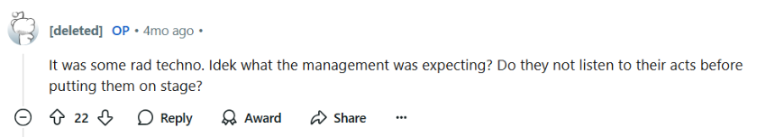
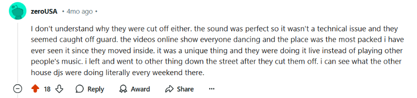

Outsider Musicians
A digital counterstory
This digital counterstory focuses on the identity of electronic music producers. I chose this first meme because I think it neatly addresses the "stock stories" aspect we read about for this weeks assignment. Almost each person that is being referred to in the picture has a vastly different idea of what it is us musicians do. I find it funny how the girlfriend views it as simply playing with toys yet the person themselves thinks they are some sort of rocket-scientist.
This next meme is quite funny as well. I would probably cross out the word Raver and put the word electronic musician in its place but the idea still works. If you ever begin to get into electronic music you realize how wide the genre actually is. House music is very different from say drum and bass or trance yet most people would have no idea what these words even meant which shows how much of a rabbit hole this culture can become.
The third meme points out the fact that music producers tend to be big spenders of money which is also usually true. There are always new pieces of gear or software to buy and almost everyone I know falls into the collection habit sooner or later
This image is pretty accurate. Whenever I go to a show as of late I am mostly paying attention to how the sound was designed, the arrangement of the track and many other production details. It becomes almost the whole point of even attending shows in the first place. If the music isn't interesting and theres nothing worth listening to you might as well leave!
I like this meme a lot because to so many people DJing and producing electronic music is just a series of mindlessly pushing buttons when in actuality both skillsets are quite deep and complex subjects to learn. While there are new trends that make both DJing and producing easy than ever before it doesn't negate the fact that there are people who take off the training wheels so to speak and when you see something like this in a live performance its quite an incredible experience.
The music communities that I am a part of usually consist of some of the most
loyal people that I know. Whenever there are issues and situations
where certain artists are harmed by others there tends to largely be a
community discussion that addresses the conflict.
An example I have that comes to mind recently is when a local group of
artists had been given a night to play their music at a fancy new
venue down in the west bottoms area of kansas city. This new venue has
been known to play favorites with certain wealthier people in
the music scene who stick to relatively safe mainstream club genres such
as tech and progressive house / Top 40 EDM versus more underground styles
such as techno, garage, drum and bass and other genres.This has led to
a sense of soft-gatekeeping by the community.
When this new venue decided to book a new group of electronic artists
who had come to work together through the
Kansas City Synthesizer Collective
everyone was excited for the performance. This was to be an
actual live performance on drum machines and synthesizers as opposed to
strictly just a DJ set. The performing group had emailed the venue
ahead of time with music samples of their style and sound to make sure
they would be a good fit, to which the venue agreed.
Ultimately what ended up happening was the group began their
performance and then midway through their set one of the three owners
of the venue had had enough of their sound and decided to have them
pull the plug on their liveset, even though the venue was packed and
having a great time.
This led to a sense of frustration not only for the cut in the planned
performance but also for the fact that the performers had thousands of
dollars of gear left on the DJ booth, at which point the people who
were picked to replace them began setting up their gear on top of this
equipment, with no respect for the performers or their gear.
This ended up being quite a dramatic instance in our community. Not
only did it resonate across our community but also
reddit.com/r/kansascity as well. A pretty popular post made it to the
front page of the /r/kansascity site which can be found at the
following link:
https://www.reddit.com/r/kansascity/comments/1ds3c5p/in_the_lowest_ferns_is_a_terrible_venue/
Many people in the comments were also upset that they had paid money
to see a certain performance, were even enjoying the performance and
then had said performance canceled. It was rather fascinating to
witness all of this happen live.
Some of my favorite comments:


After these events transpired the more underground side of the music
community banded together to show support. This led to many people
asking for things ranging for the venue to make a public statement as
well as planning a future show that could compensate the performers
for their lost show. One of the more respected members of the community
brought the leader of the band and the venue owners together to discuss
the issue and while there were still some resentments on the side of the
band the community at least realized that whatever the venue said was
more in favor of the profit motive than actually helping the more underground
side of the community. This could be seen as a positive since the community
now knows who is actually valuable to work with creatively.
All in all it was really heartwarming to see so many of the DJs and
artists that I know band together to basically oppose a certain venue
from treating artists like trash.
I think this story goes to show the differences between certain
dominant groups versus smaller and more niche ones. Even though both
groups say they both love music, it always the dominant group that is
more exclusionary first. Tying the memes back to the story, I think it
is fairly accurate to say that many of the traits that the memes portray
electronic music producers to have become copied and commodified into
an image that people adopt strictly for attention. As I was growing up
these types of people would be called "posers" which is even more ironic
since we live in a post-selfie age.